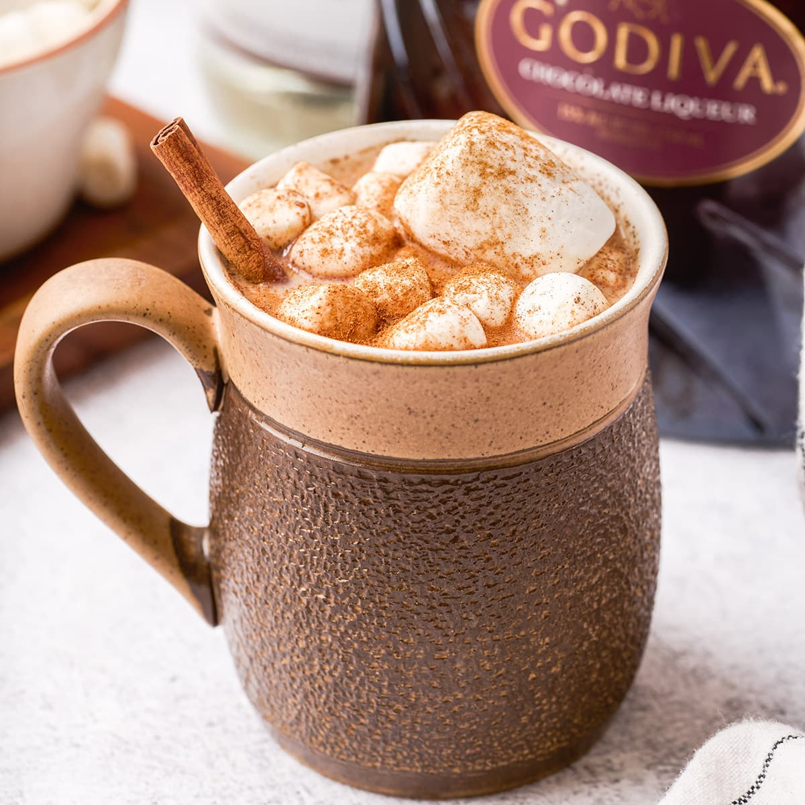

- Step One: Make a cup of hot chocolate however you'd like (I prefer a simple Swiss Miss packet)
- Step Two: Once finished, add chocolate chips, and stir frequently until all melted. Add vanilla extract and Baileys. Stir to combine.
- Step Three: Enjoy!